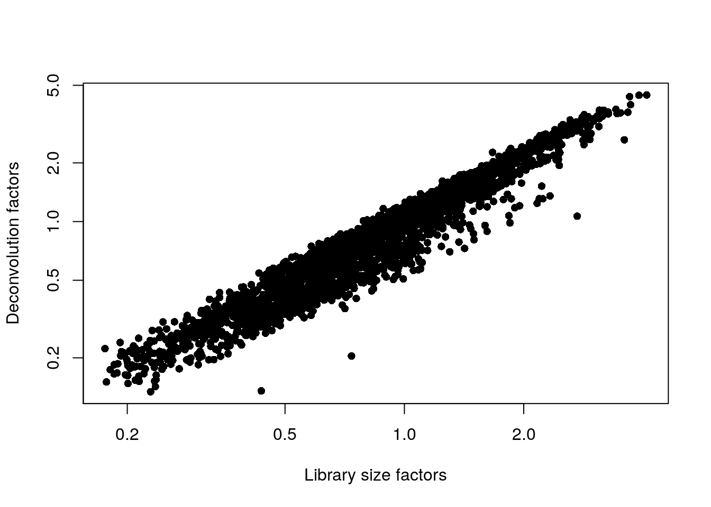

Chapter 3 Normalization
Single-cell RNA-seq libraries often vary in sequence coverage due to technical differences in cDNA capture or PCR amplification. We use normalization to correct for these differences.
3.1 Calculating scaling factors
The simplest approach is to use library size as a scaling factor for each cell. One assumption underlying the library size normalization method is that library size is an unbiased estimate of capture or amplification issues. While this assumption is not necessarily biologically realistic, in practice the accuracy of the normalization step is unlikely to cause issues in exploratory scRNA-seq analyses.
Sometimes unbalanced differential expression exists between samples, which results in composition biases in the dataset. Library size normalization can result in the non-differentially-expressed genes falsely appearing to be downregulated in one cell compared to another. If this sounds familiar, it’s because this topic has been well-studied for bulk RNA-seq analysis. Several bulk normalization methods have been created to deal with this problem in bulk RNA-seq analyses. In order to translate these algorithms to scRNA-seq and the large number of zero and low counts, we pool counts from many cells for accurate sizing factor estimation. These estimated sizing factors are then “deconvolved” into cell-based factors. This process is called normalization by deconvolution.
# AnVIL::install("scran")
library(scran)
# calculating scaling factors
set.seed(1000)
clusters <- quickCluster(sce.zeisel.qc)
sce.zeisel.qc <- computeSumFactors(sce.zeisel.qc, cluster = clusters)
# comparing scaling factors based on library size (librarySizeFactors) and deconvolution (sizeFactors)
plot(librarySizeFactors(sce.zeisel.qc), sizeFactors(sce.zeisel.qc), pch = 16, xlab = "Library size factors", ylab = "Deconvolution factors", log = "xy")
QUESTIONS
- How do the scaling factors using library size normalization compare to the scaling factors using deconvolution normalization?
3.2 Applying scaling factors and computing normalized expression values
Once we have calculated scaling factors, we can compute normalized expression values for each sample by dividing the count for each gene by the size factor for the cell. The function we are using also log-transforms these normalized values, which will allow us to calculate log-fold changes in expression (a much more intuitive measure of differential expression!) This lets us focus on contributions from genes with strong relative differences.
# computing normalized expression values
sce.zeisel.qc <- logNormCounts(sce.zeisel.qc)